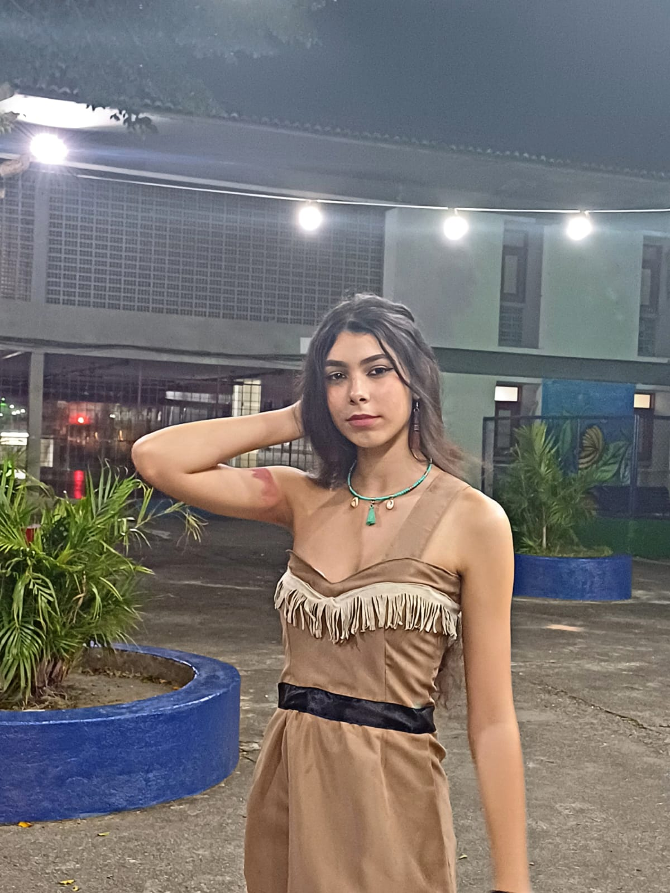
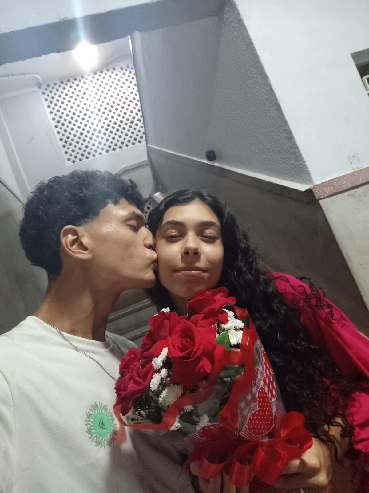
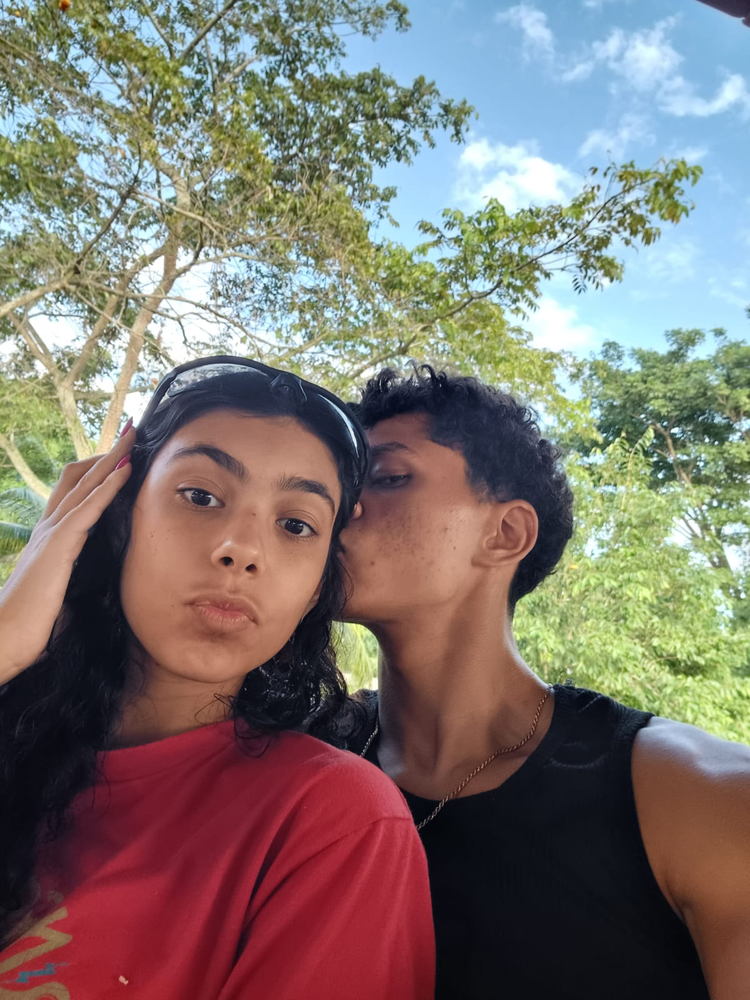
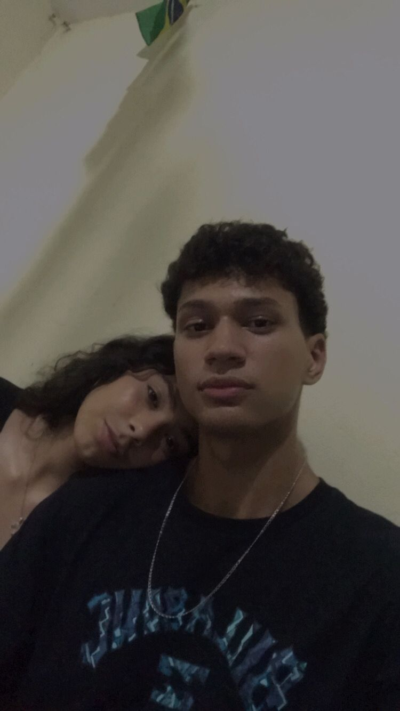
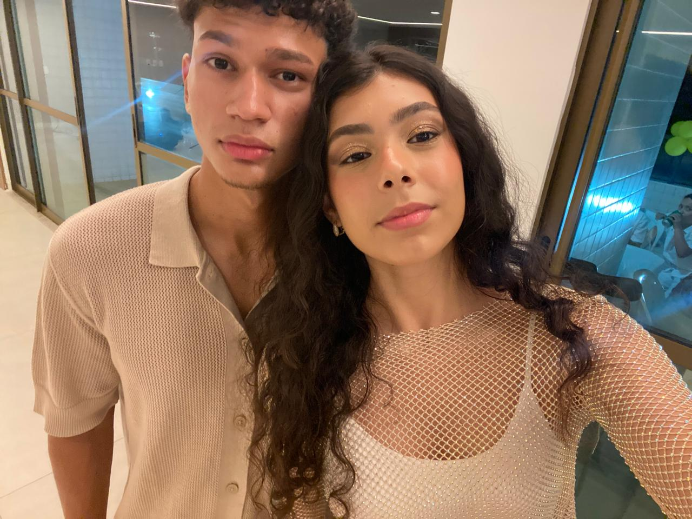
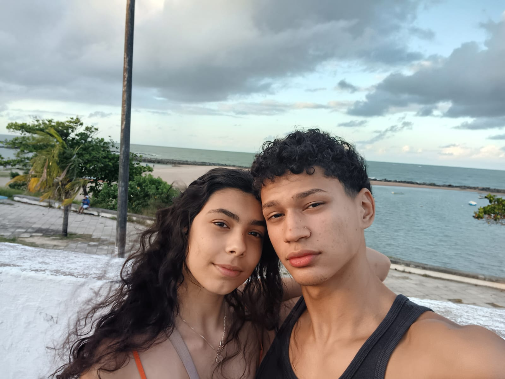
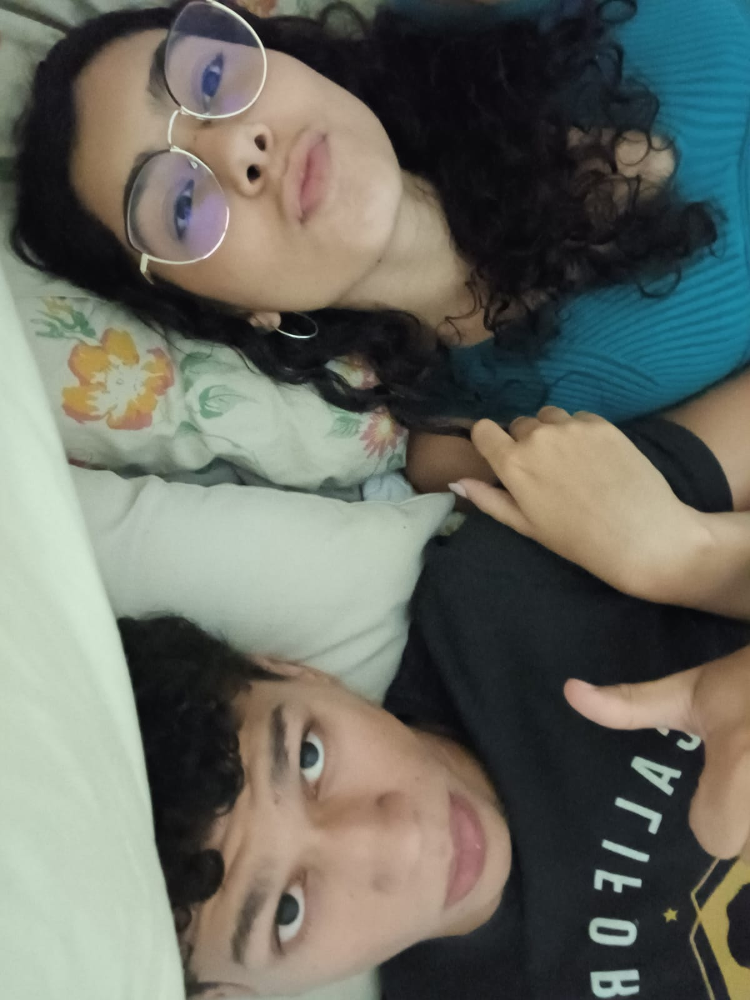
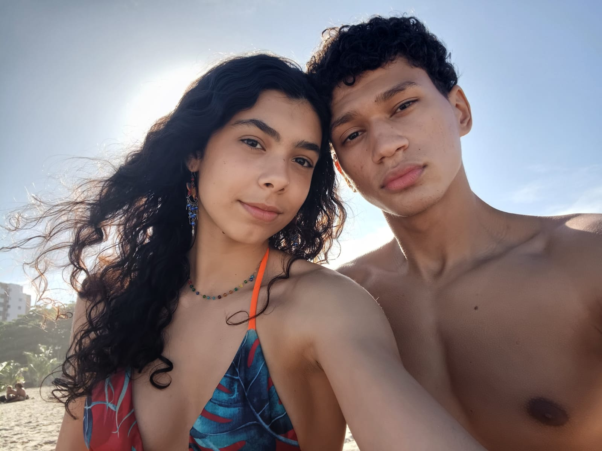

Tempo te amando...
O que sinto
"Você se tornou o lugar mais bonito onde eu já estive."
Antes de você, eu achava que amor era algo que se encontrava.
Hoje eu sei que amor é algo que se constrói, todos os dias,
em cada gesto pequeno, em cada sorriso compartilhado.
Eternamente
Gal Costa
Spotify
Nossa história
Cada capítulo, Cada memória
Quando tudo começou
O dia que eu dei uma curtida nos teus stories e fiquei em choque achando que tinha errado, mas no final recebi uma curtida de volta e morri de felicidade.

De frente para você
Estava nervoso, ansioso, mas quando te vi e comecei a conversar com você no meu aniversário, todo aquele nervosismo virou alegria. Você sorria e eu só conseguia sorrir de volta e admirar seu sorriso lindo.

Quando eu percebi
Depois de um tempo conversando e criando afinidade percebi que já estava pronto pra namorar contigo. Não tinha mais dúvida, não existia mais ninguém no mundo — era você ou você.

Metade de um ano
Conhecendo um ao outro mais profundamente e se tornando mais íntimos. E a cada dia que passava me apaixonava cada vez mais por essa pessoa incrível que é você.

Aqui, agora, com você
Um ano ficando junto ao seu lado, compartilhando alegrias e tristezas, e tendo a felicidade de poder contar com você para o que der e vier. Eu te amo muito, flor!
Nossas memórias
clique em uma foto para ver o que eu sentia naquele dia

Ano novo
Lembro como se fosse hoje o sentimento de passar a virada do ano com você, flor, e me pegar pensando: "Meu Deus, como eu amo essa menina. Só quero poder continuar tendo esse sentimento e a alegria de viver mais momentos como esse ao lado dela."
♡
Indo aos correios
Lembro de como uma simples ida ao correio poderia melhorar tanto o dia de alguém só por ter uma companhia com quem conversar, se divertir e amar. Cheguei em casa e agradeci por ter ido, porque foi muito bom ter ficado junto de você, flor!
♡
Aniversário de Juan
Fiquei feliz por você me levar para conhecer suas amigas, mas estava nervoso. No final, você ficou ao meu lado o tempo todo e me trouxe um conforto que achei impossível sentir naquela situação. Isso me deu uma confiança muito grande na nossa relação.
♡
Cabana
Fizemos algo muito simples — nossa cabaninha — mas foi muito legal. O sentimento era como se a gente estivesse brincando juntos igual na infância. Situações como essa só deixam ainda mais nítido como qualquer coisa fica interessante se for com você. Te amo, flor!
♡
São João
É muito bom poder passar um fim de semana com alguém que você ama: acordar, comer, conversar, descansar, tomar banho de piscina juntos. Foi um sentimento que senti pela primeira vez e que não quero parar de sentir. Te amo, flor!
♡
Praia
Quase nos ferramos atravessando o mar com a maré enchendo. Foi um susto que não quero mais tomar. Mas depois ficamos conversando o caminho todo e na praça. Sinto que aquele foi um dia em que nos aproximamos bastante.
♡"E que venham mais mil dias assim —
ao seu lado."
Com todo o meu amor ♡ seu namorado